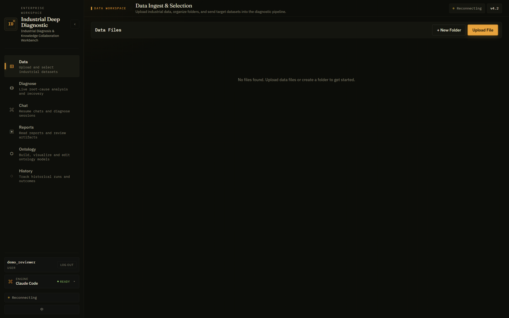
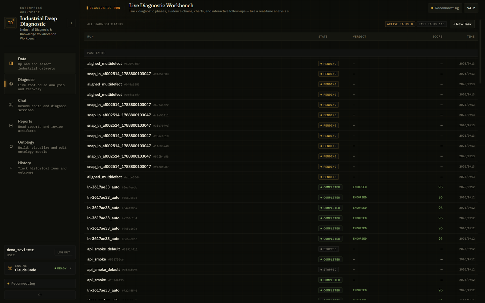
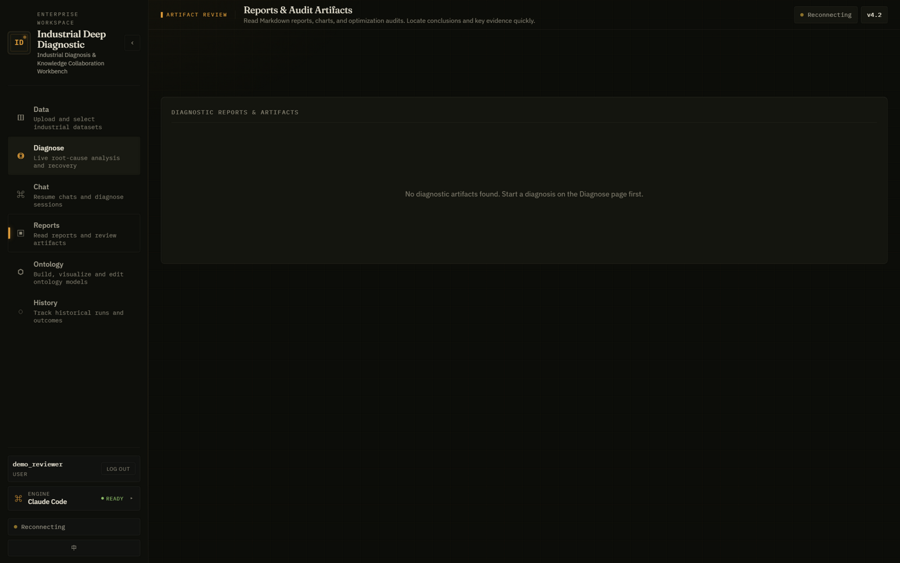
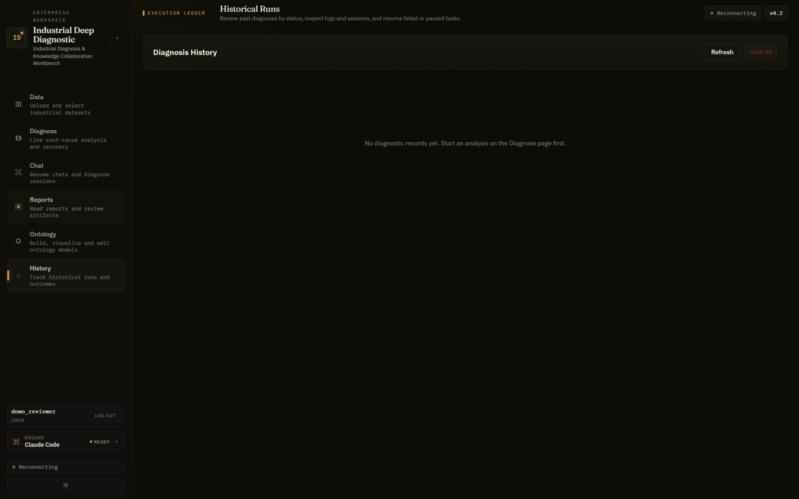
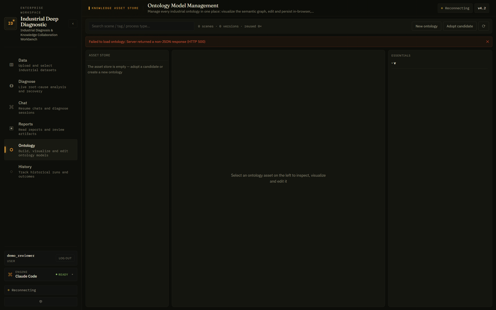

Industrial Deep Diagnostic · v4.2 · System Guide
九阶段根因诊断流水线全景
从数据接入到可视化报告的完整执行流程：每一步做什么、用什么真实算法、产出什么工件、过哪一道机器门禁。
本指南基于真实运行（两个通过全部门禁的完整诊断 + 浏览器实拍界面）编写。
9流水线阶段
CP-1~9机器检查点
14可替换执行引擎
L1–L7证据分级
3 态判决协议
≈45finalize 校验项
① 五层执行架构
每一层职责单一、可独立替换；诊断结果必须经过最底层的审计平面才能被采信——"没有执行证明就没有结果"。
CLIENT客户端层
Web 工作台（Vue 3 + SSE 实时流）、CLI 驱动器、CI 冒测——三类入口提交诊断任务
▼
ENGINE ×14执行引擎层
claude / omp / codex / dsh / opencode / gemini / copilot / cursor / crush / goose / qwen / pi / hermes / mock ——
统一 事件流 + 预检三态（未知 400 / 不可用 409），引擎替换即配置变更
▼
ORCHESTRATOR编排主代理
持有 18 个技能包，按 SKILL_PATH 派发 14 个专职子代理；代理间只通过工件通信（不共享对话上下文）
▼
PIPELINE 0–9九阶段诊断管线
本体 → 统计 → 视觉 → 推理 → 双审计 → 报告 → 终审 → 可视化 → 收尾（下方逐步详解）
▼
AUDIT审计平面
.pipeline_events.jsonl → log-check（顺序/配对校验）→ finalize（≈45 项：inventory/schema/closure/judge-cross/event-archive）→ 单一 PASS/FAIL
② 管线流程图
实线为强制顺序；琥珀色 = 机器检查点；绿色 = 硬门禁；Steps 5a‖5b 是唯一并行段；虚线为有界修复回路。
CP-1Step 0/1 · Setup + Inspect
main agent + inspect.mjs
建运行目录、SHA-256 指纹、流式探测（分隔符/时间列/行列统计）
CP-2/3Step 2 · Ontology
context-builder
本体构建或资产库指纹复用（秒级）；变量语义/物理原理/混杂因子
CP-4Step 3 · Statistics
data-processor + stats-package
工况检测→计划驱动统计→异常→时滞 CCF→自适应绘图
3.5Step 3.5 · VLM 视觉
vlm-visual-analyzer
读图提取视觉证据；无视觉模型时合规降级 metadata_backed_inference
CP-5Step 4 · Diagnosis
diagnostician
竞争假设推理（≥3 假设、定量排除）、三态判决、证据链
CP-6Step 5a‖5b · 双审计（并行）
judge ‖ report-reviewer
十判据质量门（≥90 通过）‖ 物理预审计（0 FATAL 放行）
CP-7Step 6 · Report
reporter
金字塔报告 + run_summary（primary_finding 与 diagnosis 逐字一致）
CP-8Step 7 · 物理终审
report-reviewer
独立验算机制链；必须返回 ENDORSED
CP-9Step 8/8.5 · HTML + 审查
html-visualizer + reviewer
render_manifest 先行 → 报告页 → 独立审查 verdict=pass（≥5120B）
FINALStep 9 · Finalise
pipeline-finalize
inventory/schema/closure/judge-cross/event-archive 五组全过 → PASS
⟲ 有界修复回路：judge <90 → 带修复范围重跑诊断（每故障 ≤3 轮，全局 ≤5；反振荡 PARAM_AMBIGUITY → 置信度帽 0.50；第三轮同题 → COMPETING_SET）
③ 每一步做了什么（真实算法与工件）
以下内容与代码库一一对应：脚本名、阈值、枚举均为真实实现，非示意。
STEP 0/1
Setup + 数据巡检
main-agent · setup.mjs / inspect.mjs
- 创建运行目录骨架（00_input…06_scripts）与 run_manifest
- inspect.mjs：流式解析 CSV/TSV/XLSX/Parquet，分隔符探测（tab→分号→逗号），时间列识别，行列/缺失统计
- >10 万行自动抽样；SHA-256 数据指纹写入 manifest（
time_column 字段存在即触发时序图门禁）
产出 input_manifest.json · input_inspection.json · user_context.json → CP-1
STEP 2
本体构建 / 资产复用
context-builder · ontology_store.mjs
- 优先指纹复用：列 schema 指纹命中资产库 → 秒级复制已验证本体（本次 TEP 实测 1s）
- 否则由代理构建：变量语义、物理原理、控制回路、混杂因子标注、RAG 语义增强（不可用则降级 parameter_to_physics + L5）
- 本体 ≥1KB 且 schema 合法过 CP-2；澄清 AUTO_RESOLVED 过 CP-3
产出 01_ontology/ontology.json（+ schema.json / rag_deep_understanding.json）→ CP-2/3
STEP 3
确定性统计分析
data-processor · dp_toolkit.py + stats/run.py
- Phase 1.2 自适应方法计划：先蒸馏 3–6 个假设，再按假设选最小判别方法集——方法跟随假设，不做无计划全量扫描
- 工况检测（三算法融合）先于统计：剔除启动/停机/过渡段，只留稳态
- 统计引擎：Pearson/Spearman 矩阵、互信息、滞后补偿 CCF（±10 步寻优）、Granger（需 n≥maxLag+10）、
反伪相关四条件：时间先序 + 去趋势/Simpson 分层 + Bonferroni 多重检验 + 留一法离群敏感性；分布分析 + 变点检测
- Phase 5.0a 自适应绘图（新增）：数据形态→图型（二维网格→云图 / 多参数→z-overlay / 单通道→折线），时间对齐溯源 time_alignment.json
- finalize 合成 data_analysis_conclusion（强制交接件）+ ≤3KB stage_digest（下游速读）
产出 data_analysis_conclusion.json · validate_report.json · segment_statistics.json · 03_figures/* → CP-4
STEP 3.5
VLM 视觉证据
vlm-visual-analyzer（data-processor 内 Phase 5.5 派发）
- vlm_input_manifest 过滤：只有时空对齐的图才进 VLM（时序叠加=MANDATORY，单参数趋势=排除）
- VLM 按 manifest 顺序读图：同步性/先序性/事件响应/趋势形态/群体分离
- 无视觉模型 → 合规降级
metadata_backed_inference（观测来自图设计元数据+数值证据，注明非像素读取）
- vlm-verification-check 防伪：核对 source_agent、骨架被覆写、未越界读图
产出 03_figures/visual_analysis.json · image_captions.json（L4 视觉证据）
STEP 4 · 核心推理
竞争假设诊断（诊断引擎）
diagnostician · physics-constrained competing-hypotheses engine
- ≥3 个竞争假设，每假设带机理类（WEAR/DRIFT/CONTAMINATION/OPERATION/ENVIRONMENT/INTERACTION）
- 定量排除：矛盾证据强度 > 支持强度才可排除（|X|>|E|），每条排除引用具体反证 + 排除类型（PHYSICAL/STATISTICAL/COMBINED）
- chain_link_validation：机理链每一箭头单独标注验证状态（ALL_LINKS_VALIDATED / DATA_LINK_MISSING / MAGNITUDE_IMPLAUSIBLE…）——防止"物理话术无数据支撑"
- 三态判决：DETERMINED（唯一存续且全部排除有证）/ COMPETING_SET（存续≥2 不可分，点名判别测量）/ NEEDS_DATA（证据不足）
- 证据分级 L1–L7：结论置信度 ≤ 最弱证据级；置信度帽：CS≤0.70、INDISTINGUISHABLE≤0.65、PARAM_AMBIGUITY≤0.50、门禁侧非 CS≤0.90
- 每假设 five_factor 五因子分解（统计/物理/时序/混杂/完备性）+ 证伪条件 + 补测清单
产出 diagnosis.json · evidence.json · confidence.json · reasoning_chain.json（R1–R8） → CP-5
STEP 5a‖5b（并行）
质量门 + 物理预审计
judge ‖ report-reviewer
- 十判据 judge（数据质量感知/变量分类/时间对齐/可视化/循证结论/相关vs因果/不确定性披露/报告质量/不过度声称/完备性），总分 ≥90 才放行
- 未达标 → 进入有界修复回路：带修复范围重跑（只重算被点名缺陷的工件，其余 carried over），best-of-3、全局 ≤5
- 物理预审计：机制链、量纲、数据真相抽查，0 FATAL 才放行
产出 judge_feedback.json（provenance 标注）· optimizer_preflight.md → CP-6
STEP 6 → 7
报告 + 物理终审
reporter → report-reviewer
- 九段金字塔报告（执行摘要/统计发现/根因结论/证据附录/建议），编号锚点被门禁校验
- 物理终审（Step 7）：独立验算机制链、数值抽查、弱证据限定词、判决-置信度一致性 → 必须 ENDORSED
产出 report.md · run_summary.json · optimizer.md(ENDORSED) → CP-7/8
STEP 8 / 8.5
HTML 可视化 + 独立审查
html-visualizer → html-reviewer
- manifest-first：先写 render_manifest.json（页面模型），再渲染 diagnostic-report.html（ECharts，≥5120B）
- html_selfcheck 自检 + 独立 html-reviewer 审查（渲染/数值溯源/相对路径/诚实性）→ verdict=pass 过 CP-9
产出 diagnostic-report.html · render_manifest.json · html_selfcheck.json · html_review.json → CP-9
STEP 9
Finalise 终局门禁
pipeline-finalize.mjs（确定性脚本）
- 五组校验全过才 PASS：inventory（≈33 项产物存在性）· schema（14 个官方 schema 逐项验证）·
closure（过程波动/双驱动/本体桥/验证与视觉前向引用）· judge-cross-audit（判决-评分交叉核对）· event-archive（事件顺序 + 交付契约）
- 任何 critical 失败 → 整体 FAIL，run 不可被判分——这是"结果必须可审计"的最终执行点
- 另产出 evidence_closure_report.json（证据闭环报告）
产出 pipeline_finalize_report.json · evidence_closure_report.json → 总 PASS
④ 实拍界面（英文模式 · 浏览器实截）
以下为浏览器实截的项目界面（1600×1000，英文 locale）。截图对应的真实交互：注册登录 → 六大工作区。

① Data — 数据接入与选择：上传工业数据、组织文件夹、把目标数据集送入诊断管线。底部状态条显示当前引擎（Claude Code · READY）与实时连接状态。

② Diagnose — 实时诊断工作台：任务列表显示 115 个历史运行及其状态与判定（COMPLETED / ENDORSED / 评分 96 等）；右上 ACTIVE TASKS 与「+ New Task」启动新诊断；每行可进入实时阶段跟踪、证据链与交互式追问。

③ Reports — 报告与审计工件：集中浏览 Markdown 诊断报告、图表与优化审计，可快速定位结论与关键证据（新工作区需先发起诊断）。

④ History — 执行台账：按状态回看历史诊断、检查日志与会话、恢复失败或暂停的任务（Refresh / Clear All）。

⑤ Ontology — 本体知识资产库：语义图可视化、在浏览器内编辑并持久化本体资产（资产库服务离线时会显式报错——系统的优雅降级设计：本体构建回退到 parameter_to_physics 语义 + 数据自描述）。
⑤ 真实运行验证（本周实测）
两个场景按上述流程完整执行，均通过全部门禁；判定与历史基准高度一致。
| 场景 | 本次判定 | 关键判别性证据（可复算） | 历史基准一致性 |
|---|
SKAB valve1_1
水循环回路 · 1 Hz · 1145 行 |
DETERMINED 0.78
下游流通路径节流 |
故障窗行 621–924（303 s）：流量 −4.17% 锁定最低量化档猎振 212 次；电流 −3.09%；相似定律判别器排除降速路径（预测 −12% vs 实测 −3.09%） |
一致 机理相同；本次以电流判别器闭合主机理（历史为 CS 0.65），执行器级子归因同样诚实挂起 |
TEP d07
流股4 供给压力损失 · 3 min · 960 行 |
DETERMINED 0.82
流股4 供给压力损失（XMV_4 补偿） |
三段结构：XMEAS_4 瞬跌 −12.29σ → XMV_4 +18.73σ→+12.24σ 保持（+25.13%）→ 流量恢复 held −0.25σ；反应器压力 ±38σ 瞬态后重控归零 |
逐点一致 判决类型/置信度 82=82/XMV_4 +25.3%≈+25.13%/进料瞬态 −11.9σ≈−12.29σ |
为什么这两次运行可信：
两次 run 均通过 pipeline-finalize 五组门禁（inventory 33 项 / schema 14 项 / closure / judge-cross / event-archive）
与 pipeline-log-check（0 critical）；diagnosis 的 primary_finding 与 run_summary 逐字一致；
每条证据带 L 级与来源路径，任何数字可回溯到 02_processed 确定性产物复算。
已知边界（诚实披露）：
判别通道缺失时执行器级子归因会显式挂起（SKAB 阀位通道、TEP 上游 header 测点）并转化为补测清单而非强行结论；
无视觉模型部署下 VLM 走 metadata_backed_inference 合规降级（观测来自数值证据而非像素）；
统计结论受最弱证据级 L3 约束。